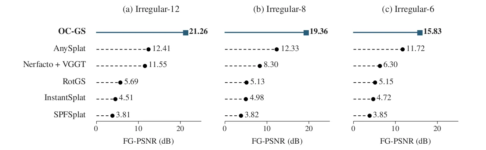
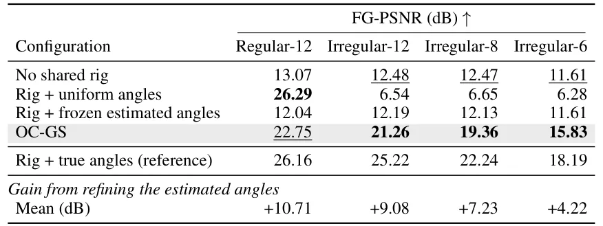
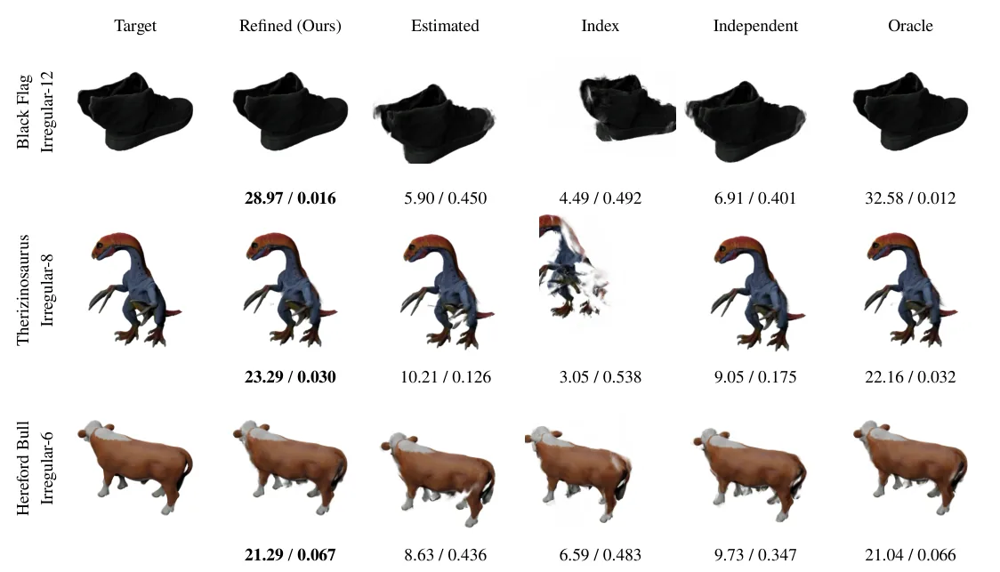

O problema da captura irregular
Mesas giratórias são equipamentos comuns em laboratórios de fenómica vegetal, digitalização de patrimônio cultural, espécimes biológicos e inspeção industrial. O objeto gira enquanto uma câmera fixa captura imagens de múltiplos ângulos. A ideia é simples: mais ângulos, melhor a reconstrução 3D. Mas há um problema prático. Quando você precisa escanear centenas de objetos por dia, o tempo de captura importa. Reduzir o número de imagens acelera o processo, mas introduz complicações.
A primeira complicação é que motores de mesa giratória raramente giram de forma perfeitamente uniforme. Variações de velocidade, frames perdidos pela câmera ou pausas acidentais fazem com que o espaçamento angular entre imagens consecutivas seja desigual. A segunda complicação é que métodos tradicionais de reconstrução 3D assumem que você conhece a posição exata da câmera em cada frame, ou que consegue estimá-la com Structure from Motion. Nenhuma das duas coisas funciona bem quando você tem poucas imagens com espaçamento irregular.
Métodos recentes de reconstrução sem poses de câmera fornecidas, como AnySplat, InstantSplat e SPFSplat, usam redes neurais para estimar geometria e movimento a partir das imagens. RotGS foi desenhado especificamente para mesas giratórias, incorporando um eixo de rotação compartilhado e supervisão por fluxo óptico. Mas todos esses métodos enfrentam dificuldades quando o espaçamento angular é irregular. A solução mais comum é assumir que o frame j corresponde ao ângulo 360°×j/N, tratando o índice do frame como medida de rotação. Isso funciona apenas se a rotação for uniforme, o que não é o caso real.
A ideia do OC-GS
OC-GS, proposto por pesquisadores da Purdue University, resolve o problema refinando os ângulos de cada imagem durante a reconstrução, mas mantendo um modelo de movimento compartilhado. Em vez de tratar cada câmera como independente ou assumir espaçamento uniforme, o método otimiza conjuntamente a cena 3D representada por Gaussianas, uma única câmera, um eixo de rotação, um pivô e uma correção angular para cada vista.
A sigla OC-GS significa object-centric Gaussian splatting com refinamento orbit-consistent. Object-centric porque o método se concentra em objetos isolados capturados em mesa giratória. Orbit-consistent porque todas as câmeras efetivas devem pertencer à mesma trajetória circular ao redor do objeto. Gaussian splatting é a representação de cena: em vez de uma malha ou um campo de radiância neural contínuo, a geometria é representada por um conjunto de primitivas gaussianas 3D que podem ser renderizadas de forma eficiente.
O truque está em como o método lida com os ângulos. Ângulos derivados de imagens (via redes como VGGT) capturam o espaçamento desigual, mas contêm erros. Mantê-los fixos preserva esses erros. Otimizar cada câmera de forma independente permite correções que violam o movimento de mesa giratória. OC-GS refina os ângulos individuais dentro de um modelo de rotação compartilhado, ajustando as lacunas angulares sem introduzir uma rotação comum redundante.

Como funciona o refinamento orbit-consistent
O método começa com uma inicialização derivada de imagens. Um modelo pré-treinado, como VGGT, prediz a geometria inicial da cena e as posições das câmeras a partir das N imagens de entrada. VGGT é uma rede que estima conjuntamente câmeras e geometria de cena, sem necessidade de poses fornecidas. Os centros das câmeras preditas são usados para ajustar um círculo no espaço 3D. Esse círculo define o eixo de rotação inicial, o pivô (centro do círculo) e os ângulos azimutais iniciais de cada vista.
A partir daí, OC-GS otimiza conjuntamente cinco grupos de parâmetros: a cena de Gaussianas 3D (posições, opacidades, cores, covariâncias), uma única câmera canônica (parâmetros intrínsecos e extrínsecos), o eixo de rotação n, o pivô c e uma correção angular para cada vista. A câmera efetiva da vista j é obtida rotacionando a câmera canônica pelo ângulo θ_j ao redor do eixo n, centrado no pivô c.
Para evitar que o refinamento introduza uma rotação comum redundante (todos os ângulos girando juntos, o que não muda a reconstrução), o método subtrai a média das correções angulares a cada passo de otimização. Isso garante que apenas o espaçamento relativo entre as vistas seja ajustado, não a orientação global do conjunto. A função de perda combina erro fotométrico (diferença entre imagens renderizadas e reais), perda perceptual LPIPS e perda de silhueta.
Durante a otimização, o modelo ajusta os ângulos para melhor explicar as imagens observadas, ao mesmo tempo em que refina a geometria da cena. Como todos os ângulos compartilham o mesmo eixo, pivô e câmera, o refinamento respeita a restrição de movimento de mesa giratória. Isso é diferente de otimizar cada câmera de forma independente, como fazem alguns métodos de bundle adjustment, que podem levar a trajetórias inconsistentes.
Resultados em objetos sintéticos
Os autores testaram OC-GS em 100 objetos do dataset Google Scanned Objects, sob quatro condições de captura: 12 vistas regularmente espaçadas, 12 vistas irregularmente espaçadas, 8 vistas irregulares e 6 vistas irregulares. Todas as vistas irregulares foram geradas introduzindo gaps aleatórios entre frames. A métrica principal é FG-PSNR, que mede a qualidade de reconstrução apenas nos pixels de primeiro plano (o objeto), ignorando o fundo. Valores mais altos indicam menor erro.
Com 12, 8 e 6 vistas irregulares, OC-GS atingiu FG-PSNR médio de 21.26, 19.36 e 15.83 dB, respectivamente. Isso superou todos os quatro baselines de Gaussian splatting sem pose avaliados em cada condição. Quando ambos os métodos produzem resultados válidos, OC-GS excedeu RotGS em pelo menos 10.25 dB nas condições irregulares e AnySplat em 4.11 dB com seis vistas. Em média, OC-GS foi 54.5% melhor que AnySplat, o segundo melhor baseline.
A qualidade de reconstrução diminuiu conforme menos vistas estavam disponíveis, mas OC-GS manteve a liderança. Exemplos visuais mostram que OC-GS preserva detalhes como as posições das pernas de um touro Hereford e a silhueta geral, enquanto vários baselines produzem reconstruções distorcidas, deslocadas ou com partes faltando. Para o conjunto Bathroom Set, OC-GS reconstrói as partes principais da cena, enquanto resultados de baseline mostram partes ausentes ou visuais espalhados.

Ablação: o que explica a melhoria?
Para isolar o efeito do refinamento de ângulos, os autores compararam variantes usando as mesmas imagens de entrada, predições VGGT, trainer e orçamento de treinamento. A comparação chave mantém os ângulos estimados fixos em uma variante e os refina em outra. Ambas usam o mesmo rig compartilhado (câmera, eixo, pivô), mudando apenas se os ângulos podem ser atualizados.
Com 12 vistas irregulares, refinar os ângulos estimados melhorou o FG-PSNR médio em 9.08 dB comparado a mantê-los fixos. Com 8 vistas, o ganho foi de 7.13 dB. Com 6 vistas, 4.22 dB. Mesmo com apenas seis imagens, o refinamento trouxe benefício substancial. A ablação também comparou com uma baseline que assume espaçamento uniforme (ângulos 360°×j/N). Refinar ângulos derivados de imagens superou assumir uniformidade em todas as condições.
Outra variante testou otimizar cada câmera de forma independente, sem o rig compartilhado. Essa configuração teve desempenho inferior ao refinamento orbit-consistent, mostrando que a restrição de movimento compartilhado é importante. A ablação conclui que tanto a inicialização derivada de imagens quanto o modelo de movimento compartilhado contribuem para a melhoria.

Capturas reais e erro angular conhecido
Os autores também testaram OC-GS em capturas reais de mesa giratória. Nesse cenário, o refinamento de ângulos aumentou o FG-PSNR médio em 0.70 dB. O ganho é menor que nos dados sintéticos, provavelmente porque as capturas reais têm outras fontes de erro (iluminação variável, ruído de câmera, calibração imperfeita) que o refinamento de ângulos não resolve.
Para entender quando o refinamento ajuda, os autores introduziram erros angulares conhecidos nas predições iniciais. Eles variaram a magnitude do erro de 0° a 30° e mediram o impacto na reconstrução. O refinamento trouxe maior benefício quando os erros iniciais eram moderados (5° a 15°). Com erros muito pequenos, há pouco a corrigir. Com erros muito grandes, a inicialização pode estar tão distante da solução correta que a otimização não converge bem.
Essa análise sugere que a qualidade da inicialização importa. VGGT fornece estimativas razoáveis para a maioria dos objetos, mas não perfeitas. O refinamento orbit-consistent aproveita essas estimativas imperfeitas e as melhora durante a otimização conjunta com a geometria.
Custo computacional
OC-GS leva em média 16.2 minutos por cena e usa pico de 1.51 GB de VRAM, excluindo o tempo de inferência do VGGT. Isso é 22% mais rápido e usa 31% menos memória de pico que RotGS, que leva 20.8 minutos e 2.20 GB. Nerfacto com poses VGGT leva 23.7 minutos e 3.05 GB.
Métodos feed-forward como AnySplat e SPFSplat são muito mais rápidos (0.5 minuto), mas usam mais VRAM (8.31 GB e 6.06 GB, respectivamente) e têm qualidade de reconstrução inferior. InstantSplat leva 2.5 minutos e 6.69 GB. OC-GS é um método de otimização por cena, não feed-forward, então o tempo de treinamento é esperado. O importante é que ele é mais eficiente que outros métodos de otimização por cena avaliados.

Limitações e trabalho futuro
OC-GS assume um eixo de rotação fixo com ruído mínimo. Se o eixo variar significativamente durante a captura (por exemplo, uma mesa giratória instável), o modelo de movimento compartilhado não será apropriado. O método também depende da qualidade da inicialização fornecida por VGGT. Se as predições iniciais de câmera ou geometria forem muito ruins, a otimização pode não convergir para uma boa solução.
Os experimentos foram realizados em objetos isolados do dataset Google Scanned Objects e algumas capturas reais. Não está claro como o método se comporta em cenas mais complexas, com múltiplos objetos ou oclusões severas. Os autores também não exploraram o impacto de diferentes modelos de inicialização além de VGGT.
O paper menciona que trabalhos futuros adaptarão o refinamento à qualidade da inicialização e avaliarão o uso em fenómica vegetal como tarefa downstream. Isso sugere que os autores veem aplicações práticas em domínios onde captura rápida e irregular é comum. Melhorias nos modelos de inicialização provavelmente beneficiarão OC-GS, já que a qualidade da reconstrução final depende em parte da qualidade das estimativas iniciais.
O que fica claro
OC-GS mostra que refinar ângulos incertos dentro de um modelo de movimento compartilhado melhora a reconstrução a partir de capturas esparsas e irregulares de mesa giratória. O ganho é substancial: até 9 dB de PSNR com 12 vistas irregulares, comparado a manter os ângulos estimados fixos. O método supera baselines de Gaussian splatting sem pose em todas as condições irregulares testadas.
A abordagem é conceitualmente simples: em vez de assumir espaçamento uniforme ou otimizar câmeras independentes, OC-GS refina os ângulos de cada vista enquanto mantém um rig compartilhado. Isso respeita a física da captura (um eixo, um pivô, uma câmera) e reduz o espaço de busca da otimização. O refinamento conjunto de geometria e ângulos permite que ambos se corrijam mutuamente durante o treinamento.
Os resultados sugerem que métodos de reconstrução 3D para mesas giratórias devem levar em conta a irregularidade da captura. Assumir rotação uniforme ou manter estimativas de ângulo fixas deixa desempenho na mesa. OC-GS oferece uma solução prática, eficiente e que se integra bem com inicializadores modernos baseados em aprendizado.
O que fica
- OC-GS refina os ângulos de cada imagem durante a reconstrução 3D, mantendo um modelo de movimento compartilhado (um eixo, um pivô, uma câmera), o que respeita a física da mesa giratória.
- Com 12, 8 e 6 vistas irregulares, OC-GS atingiu 21.26, 19.36 e 15.83 dB de FG-PSNR, superando todos os baselines de Gaussian splatting sem pose em cada condição.
- Refinar ângulos estimados melhora FG-PSNR em até 9.08 dB comparado a mantê-los fixos, usando o mesmo trainer e inicialização, mostrando que o refinement orbit-consistent é a chave.
- O método é 22% mais rápido e usa 31% menos memória que RotGS, mas depende da qualidade da inicialização (VGGT) e assume eixo de rotação fixo com ruído mínimo.
Paper original: OC-GS: Gaussian Splatting for Irregular Turntable Capture
Comentários
Nenhum comentário ainda. Seja o primeiro.